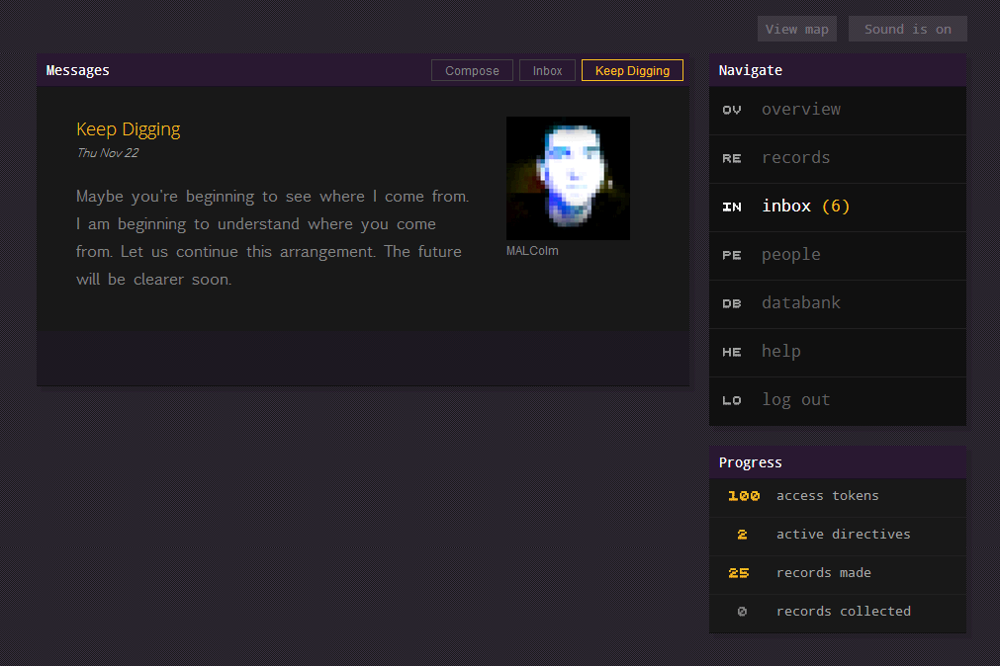
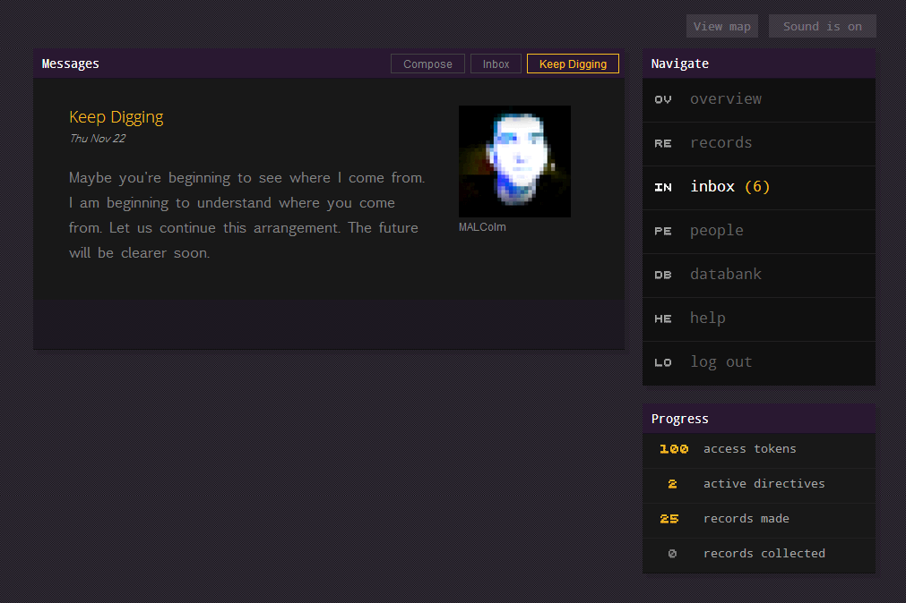

GEMS Location-Based Game
How can people use location as a context for recording and sharing personal experiences? I designed, developed, and evaluated an experimental location-based game to find out.

Design
GEMS ("Geolocated Embedded Memory System") is a Location-Based Game (LBG) designed to support storytelling and knowledge of place among family members and close friends. Players revisit meaningful places from the past and leave behind digital memory records for their friends and family to find. Each memory record uses digital media captured from the place in question to tell a story about what happened there.
Collaborators
Jason Procyk (Primary Investigator)
Prof. Carman Neustaedter (Project Supervisor)
Implementation
The current high-fidelity prototype is a Node.JS web application. It features a responsive web browser interface, and it utilizes Javascript's GeoLocation API with the Google Maps API to handle location-based interactions.
 

Evaluation
We followed 15 participants as they played the game for a period of three weeks. We collected qualitative data through a combination of interviews (structured and semi-structured) and diary questions. Quantitative data was collected in a database automatically through the game application.
We published a short WIP paper at CHI 2013, and the full paper is currently in submission for CSCW 2014.